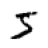

GPU MODE Lecture 3: Getting Started With CUDA for Python Programmers
- GPU MODE Lecture Notes: My notes from the GPU MODE reading group lectures run by Andreas Kopf and Mark Saroufim.
- Introduction
- Setup
- Exercise 1: RGB to Grayscale Conversion
- Exercise 2: Matrix Multiplication
- Conclusion and Next Steps
- YouTube Recording: Lecture 3: Getting Started With CUDA for Python Programmers
- Jupyter Notebook: lecture_003/pmpp.ipynb
- Google Colab: lecture_003/pmpp.ipynb
- Select the T4 GPU runtime in Colab.
- Textbook: Programming Massively Parallel Processors
Introduction
- CUDA (Compute Unified Device Architecture): A parallel computing platform and programming model developed by NVIDIA for programming NVIDIA GPUs.
- Enables high-performance computing and maximum flexibility.
- Has a reputation for being difficult to learn, but can be approachable with the right techniques.
- Prerequisites:
- Basic PyTorch Knowledge:
- Familiarity with tensors, indexing, and basic operations.
- Recommended: Practical Deep Learning for Coders (especially Part 1).
- Basic PyTorch Knowledge:
Setup
Import Dependencies:
# Core libraries for various functionalities import torch # PyTorch library for deep learning import os # Operating system interfaces import math # Mathematical functions import gzip # Compression/decompression using gzip import pickle # Object serialization # Plotting library import matplotlib.pyplot as plt # For downloading files from URLs from urllib.request import urlretrieve # File and directory handling from pathlib import Path # Specific PyTorch imports from torch import tensor # Tensor data structure # Computer vision libraries import torchvision as tv # PyTorch's computer vision library import torchvision.transforms.functional as tvf # Functional image transformations from torchvision import io # I/O operations for images and videos # For loading custom CUDA extensions from torch.utils.cpp_extension import load_inline, CUDA_HOME # Verify the CUDA install path print(CUDA_HOME)/home/innom-dt/mambaforge/envs/cuda-mode
Exercise 1: RGB to Grayscale Conversion
1. Understanding the Problem
- Goal: Convert an RGB color image to a grayscale image.
- Formula: Grayscale (luminance) = 0.2989 * Red + 0.5870 * Green +0.1140 * Blue
- This formula is a standard way to calculate luminance from RGB values.
2. Loading and Displaying the Image
Image Source: A puppy image downloaded from a URL.
def download_image(url: str, path: Path) -> None: """ Download an image from a given URL and save it to the specified path. Args: url (str): The URL of the image to download. path (Path): The local path where the image will be saved. Returns: None """ if not path.exists(): urlretrieve(url, path)# URL of the image to be downloaded url = 'https://upload.wikimedia.org/wikipedia/commons/thumb/4/43/Cute_dog.jpg/1600px-Cute_dog.jpg?20140729055059' # Define the local path where the image will be saved path_img = Path('puppy.jpg') # Download the image if it doesn't exist locally download_image(url, path_img)Loading: Use
torchvision.io.read_imageto load the image.# Read the downloaded image img = io.read_image('puppy.jpg')Image Shape: The image is a 3D tensor with dimensions (channels, height, width).
# Print the shape of the image (channels, height, width) print(img.shape) # Display a small portion of the image data (top-left corner) img[:2,:3,:4]torch.Size([3, 1066, 1600]) tensor([[[117, 119, 117, 113], [119, 129, 129, 113], [130, 126, 122, 115]], [[ 83, 85, 85, 80], [ 85, 97, 97, 82], [ 98, 93, 89, 83]]], dtype=torch.uint8)- Shape: (3, 1066, 1600) means 3 channels (RGB), 1066 rows (height), 1600 columns (width).
Data Type: The image pixels are stored as unsigned 8-bit integers (bytes).
Displaying: Use a custom
showImagefunction that usesmatplotlibto display the image.def show_img(x, figsize=(4,3), **kwargs): """ Display an image using matplotlib. Args: x (Tensor): The image tensor to display. figsize (tuple): The size of the figure (width, height). **kwargs: Additional keyword arguments to pass to plt.imshow(). Returns: None """ plt.figure(figsize=figsize) plt.axis('off') if len(x.shape) == 3: x = x.permute(1,2,0) # Convert from CHW to HWC format plt.imshow(x.cpu(), **kwargs)# Resize the image to a height of 150 pixels while maintaining aspect ratio img2 = tvf.resize(img, 150, antialias=True) # Get the dimensions of the resized image ch, h, w = img2.shape # Print the channel count, height, width, and total number of pixels print(ch, h, w, h*w) # Display the resized image show_img(img2)resized image - Resizes the image to a smaller size (smallest dimension = 150) for faster processing in the initial Python example.
3. Grayscale Conversion in Python
Approach: Iterate through every pixel and apply the gray scale formula.
Implementation:
def rgb2grey_py(x): """ Convert an RGB image to grayscale. Args: x (torch.Tensor): Input RGB image tensor of shape (C, H, W). Returns: torch.Tensor: Grayscale image tensor of shape (H, W). """ c, h, w = x.shape n = h * w x = x.flatten() # Flatten the input tensor res = torch.empty(n, dtype=x.dtype, device=x.device) # Initialize result tensor # Convert RGB to grayscale using weighted sum for i in range(n): res[i] = 0.2989 * x[i] + 0.5870 * x[i + n] + 0.1140 * x[i + 2 * n] return res.view(h, w) # Reshape result to original dimensions- Flatten the image into a 1D vector to simplify indexing.
- Flattening arranges the pixels in memory linearly
- (channel 1, row 1, col 1, channel 1, row 1, col 2, etc.).
- Flattening arranges the pixels in memory linearly
- Calculate the luminance for each pixel using the formula and store it in an output vector.
- Reshape the output vector back into a 2D matrix (height, width).
- Flatten the image into a 1D vector to simplify indexing.
Performance: This Python implementation is very slow (726 ms for a small image).
%%time # Convert image to grayscale and display img_g = rgb2grey_py(img2) show_img(img_g, cmap='gray')CPU times: user 724 ms, sys: 51 μs, total: 724 ms Wall time: 726 ms
4. Understanding CUDA and GPUs
- CUDA Speedup: CUDA enables significant speedup by utilizing the parallel processing capabilities of GPUs.
- GPU Architecture:
- Streaming Multiprocessors (SMs): Independent processing units within a GPU (e.g., 82 in an RTX 3090).
- CUDA Cores: Parallel processing units within each SM (e.g., 128 per SM in an RTX 3090).
- An RTX 3090 has 10,496 CUDA cores that can operate simultaneously.
- CUDA Programming Model:
- Kernels: Functions designed to be executed in parallel on many CUDA cores.
- Parallel Execution: CUDA automatically distributes the kernel execution across multiple CUDA cores.
- Memory Modification: Kernels primarily modify memory; they do not return values directly.
5. Simulating a CUDA Kernel in Python
Limitations: This simulation does not run in parallel and is not faster than the original Python loop.
Purpose: To demonstrate the conceptual behavior of a CUDA kernel.
runKernelFunction: Simulates a CUDA kernel execution in Python using a single for loop.def run_kernel(f, times, *args): """ Run a kernel function multiple times. Args: f (function): Kernel function to run. times (int): Number of times to run the kernel. *args: Additional arguments to pass to the kernel function. """ for i in range(times): f(i, *args)- Takes a function, the number of times to run it, and arguments as input.
- Calls the function repeatedly with an index and the provided arguments.
Grayscale Conversion (Simulated Kernel):
def rgb2grey_k(i, x, out, n): """ Kernel function for RGB to grayscale conversion. Args: i (int): Current index. x (torch.Tensor): Flattened input RGB tensor. out (torch.Tensor): Output grayscale tensor. n (int): Number of pixels in a single channel. """ out[i] = 0.2989 * x[i] + 0.5870 * x[i + n] + 0.1140 * x[i + 2 * n]def rgb2grey_pyk(x): """ Convert an RGB image to grayscale using a kernel approach. Args: x (torch.Tensor): Input RGB image tensor of shape (C, H, W). Returns: torch.Tensor: Grayscale image tensor of shape (H, W). """ c, h, w = x.shape n = h * w x = x.flatten() # Flatten the input tensor res = torch.empty(n, dtype=x.dtype, device=x.device) # Initialize result tensor # Apply the kernel function to convert RGB to grayscale run_kernel(rgb2grey_k, h * w, x, res, n) return res.view(h, w) # Reshape result to original dimensions# Convert image to grayscale using kernel approach and display img_g = rgb2grey_pyk(img2) show_img(img_g, cmap='gray')- Call
runKernel: Pass the grayscale conversion logic as the kernel function. - No Parallelism: This simulation does not achieve true parallelism, but demonstrates the concept.
- Call
6. CUDA Blocks and Threads
Blocks and Threads: CUDA organizes kernel execution into blocks and threads.
- Blocks: Groups of threads.
- Threads: Individual execution units within a block.
Kernel Runner with Blocks and Threads:
- CUDA kernel execution is simulated using nested for loops (one for blocks, one for threads).
- Each thread gets a unique index calculated from its block index and thread index.
Reason for Blocks and Threads:
- Shared Memory: Threads within a block share a small, fast memory space (shared memory).
- 256 KB Register File & 128 KB of L1/Shared Memory in an RTX 3090
- Synchronization: Threads within a block can synchronize their execution.
- Streaming Multiprocessor (SM) Execution: All threads within a block are executed on the same SM.
- Shared Memory: Threads within a block share a small, fast memory space (shared memory).
Choosing Block and Thread Dimensions:
- Threads per Block: Often set to 256 as a default.
- Number of Blocks: Calculated based on the total number of iterations needed and the threads per block.
Guard Block: An
ifstatement within the kernel to prevent out-of-bounds memory access due to potential block size mismatches.Python Block Kernel:
def blk_kernel(f, blocks, threads, *args): """ Simulate a GPU-like block and thread execution model. This function emulates the behavior of GPU kernels by executing a given function across a specified number of blocks and threads. Args: f (function): The function to be executed in a block-thread manner. blocks (int): The number of blocks to simulate. threads (int): The number of threads per block to simulate. *args: Additional arguments to be passed to the function f. Returns: None """ for i in range(blocks): for j in range(threads): f(i, j, threads, *args)def rgb2grey_bk(blockidx, threadidx, blockdim, x, out, n): """ Convert RGB to greyscale for a single pixel in a block-thread execution model. This function calculates the greyscale value for a single pixel using the formula: grey = 0.2989*R + 0.5870*G + 0.1140*B Args: blockidx (int): The current block index. threadidx (int): The current thread index within the block. blockdim (int): The number of threads per block. x (torch.Tensor): The flattened input RGB image tensor. out (torch.Tensor): The output tensor to store the greyscale result. n (int): The total number of pixels in the image. Returns: None """ i = blockidx * blockdim + threadidx # Calculate global index if i < n: # Ensure we're within the image bounds # Calculate greyscale value using standard coefficients out[i] = 0.2989*x[i] + 0.5870*x[i+n] + 0.1140*x[i+2*n]def rgb2grey_pybk(x): """ Convert an RGB image to greyscale using a block-thread execution model. This function simulates GPU-like parallel processing to convert an RGB image to greyscale efficiently. Args: x (torch.Tensor): The input RGB image tensor with shape (3, height, width). Returns: torch.Tensor: The resulting greyscale image tensor with shape (height, width). """ c, h, w = x.shape n = h * w x = x.flatten() # Flatten the input tensor # Prepare output tensor res = torch.empty(n, dtype=x.dtype, device=x.device) # Set up block and thread dimensions threads = 256 blocks = int(math.ceil(h*w/threads)) # Execute the conversion using our simulated block-thread model blk_kernel(rgb2grey_bk, blocks, threads, x, res, n) return res.view(h, w) # Reshape the result back to 2D# Convert the image to greyscale img_g = rgb2grey_pybk(img2) # Display the greyscale image show_img(img_g, cmap='gray')
7. CUDA Setup in a Notebook
Setup:
# Set CUDA launch blocking to '1' for synchronous kernel launches os.environ['CUDA_LAUNCH_BLOCKING'] = '1'%pip install -q wurlitzer ninja# Load the wurlitzer extension for capturing and redirecting output %load_ext wurlitzer- Set environment variable
CUDA_LAUNCH_BLOCKING=1for debugging (slows down execution). - Install
ninja(build tool) andwurlitzer(to enable printing from CUDA code in notebooks).
- Set environment variable
load_cudaFunction: A wrapper aroundtorch.utils.cpp_extension.load_inlineto simplify loading CUDA code.load_inline: A powerful function for compiling and loading CUDA code directly from Python strings.
def load_cuda(cuda_src, cpp_src, funcs, opt=False, verbose=False): """ Load CUDA and C++ source code as a Python extension. This function compiles and loads CUDA and C++ source code as a Python extension, allowing for the use of custom CUDA kernels in Python. Args: cuda_src (str): CUDA source code as a string. cpp_src (str): C++ source code as a string. funcs (list): List of function names to be exposed from the extension. opt (bool, optional): Whether to enable optimization flags. Defaults to False. verbose (bool, optional): Whether to print verbose output during compilation. Defaults to False. Returns: module: Loaded Python extension module containing the compiled functions. """ # Use load_inline to compile and load the CUDA and C++ source code return load_inline(cuda_sources=[cuda_src], cpp_sources=[cpp_src], functions=funcs, extra_cuda_cflags=["-O2"] if opt else [], verbose=verbose, name="inline_ext")Common C++ Code: Define common C++ code, including header files, macros for checking tensor properties (CUDA, contiguous), and a macro for ceiling division.
# Define CUDA boilerplate code and utility macros cuda_begin = r''' #include <torch/extension.h> #include <stdio.h> #include <c10/cuda/CUDAException.h> // Macro to check if a tensor is a CUDA tensor #define CHECK_CUDA(x) TORCH_CHECK(x.device().is_cuda(), #x " must be a CUDA tensor") // Macro to check if a tensor is contiguous in memory #define CHECK_CONTIGUOUS(x) TORCH_CHECK(x.is_contiguous(), #x " must be contiguous") // Macro to check both CUDA and contiguity requirements #define CHECK_INPUT(x) CHECK_CUDA(x); CHECK_CONTIGUOUS(x) // Utility function for ceiling division inline unsigned int cdiv(unsigned int a, unsigned int b) { return (a + b - 1) / b;} '''
8. Writing and Compiling CUDA Kernels
Writing CUDA Kernels:
- Use ChatGPT to convert Python kernel code to C++ CUDA code (or write it manually if comfortable with C++).
- Adapt the code to CUDA syntax (e.g.,
blockidx.x,blockdim.x,threadidx.x, data types, semicolons). - Use
unsigned char*foruint8(byte) data type in C++. __global__: A CUDA keyword that indicates a kernel function callable from the CPU and executed on the GPU.
Calling CUDA Kernels:
- Use triple angle brackets (
<<<...>>>) to launch a CUDA kernel. - Specify the number of blocks and threads per block within the brackets.
- Pass tensor arguments using
.data_ptr<data_type>()to get C++ pointers. - Use
input.options()to create output tensors with the same data type and device as the input tensor. - Use
TORCH_CHECKto check for CUDA errors after kernel execution.
- Use triple angle brackets (
CUDA Source Code:
# CUDA kernel definition for RGB to grayscale conversion cuda_src = cuda_begin + r''' /** * @brief CUDA kernel for converting RGB image to grayscale. * * This kernel applies the luminance formula to convert RGB values to grayscale: * Gray = 0.2989 * R + 0.5870 * G + 0.1140 * B * * @param x Pointer to the input RGB image data (interleaved R, G, B channels) * @param out Pointer to the output grayscale image data * @param n Total number of pixels in the image */ __global__ void rgb_to_grayscale_kernel(unsigned char* x, unsigned char* out, int n) { // Calculate global thread ID int i = blockIdx.x * blockDim.x + threadIdx.x; // Ensure we don't process beyond the image bounds if (i < n) { // Apply luminance formula. Note: x[i], x[i+n], and x[i+2*n] correspond to R, G, and B channels respectively out[i] = 0.2989 * x[i] + 0.5870 * x[i+n] + 0.1140 * x[i+2*n]; } } /** * @brief C++ wrapper function to call the CUDA kernel for RGB to grayscale conversion. * * This function prepares the data and launches the CUDA kernel to perform the conversion. * * @param input Input RGB image tensor (expected shape: [3, height, width]) * @return torch::Tensor Grayscale image tensor (shape: [height, width]) */ torch::Tensor rgb_to_grayscale(torch::Tensor input) { // Verify input tensor properties (shape, type, etc.) CHECK_INPUT(input); // Extract image dimensions int h = input.size(1); int w = input.size(2); printf("h*w: %d*%d\n", h, w); // Create output tensor for grayscale image auto output = torch::empty({h,w}, input.options()); // Set number of threads per block int threads = 256; // Launch kernel with calculated grid size rgb_to_grayscale_kernel<<<cdiv(w*h,threads), threads>>>( input.data_ptr<unsigned char>(), output.data_ptr<unsigned char>(), w*h); // Check for any errors in kernel launch or execution C10_CUDA_KERNEL_LAUNCH_CHECK(); return output; } '''C++ Source Code: Define a C++ header that lists the CUDA functions to be made available to Python.
# C++ function declaration for the RGB to grayscale conversion cpp_src = "torch::Tensor rgb_to_grayscale(torch::Tensor input);"Compiling with
load_cuda: Use theload_cudafunction to compile the CUDA and C++ code into a Python module.# Load the CUDA module with the defined kernel and C++ function module = load_cuda(cuda_src, cpp_src, ['rgb_to_grayscale'], verbose=True)Using /home/innom-dt/.cache/torch_extensions/py311_cu124 as PyTorch extensions root... Creating extension directory /home/innom-dt/.cache/torch_extensions/py311_cu124/inline_ext... Detected CUDA files, patching ldflags Emitting ninja build file /home/innom-dt/.cache/torch_extensions/py311_cu124/inline_ext/build.ninja... /home/innom-dt/mambaforge/envs/cuda-mode/lib/python3.11/site-packages/torch/utils/cpp_extension.py:1961: UserWarning: TORCH_CUDA_ARCH_LIST is not set, all archs for visible cards are included for compilation. If this is not desired, please set os.environ['TORCH_CUDA_ARCH_LIST']. warnings.warn( Building extension module inline_ext... Allowing ninja to set a default number of workers... (overridable by setting the environment variable MAX_JOBS=N) Loading extension module inline_ext...# Print the path to the extension module print(f"Module Path: {module.__file__}")Module Path: /home/innom-dt/.cache/torch_extensions/py311_cu124/inline_ext/inline_ext.so# Import the pandas package import pandas as pd # Do not truncate the contents of cells and display all rows and columns pd.set_option('max_colwidth', None, 'display.max_rows', None, 'display.max_columns', None) # Print the content of the module folder as a Pandas DataFrame pd.DataFrame(Path(module.__file__).parent.iterdir())Files 0 /home/innom-dt/.cache/torch_extensions/py311_cu124/inline_ext/main.o 1 /home/innom-dt/.cache/torch_extensions/py311_cu124/inline_ext/.ninja_deps 2 /home/innom-dt/.cache/torch_extensions/py311_cu124/inline_ext/build.ninja 3 /home/innom-dt/.cache/torch_extensions/py311_cu124/inline_ext/cuda.cuda.o 4 /home/innom-dt/.cache/torch_extensions/py311_cu124/inline_ext/cuda.cu 5 /home/innom-dt/.cache/torch_extensions/py311_cu124/inline_ext/.ninja_log 6 /home/innom-dt/.cache/torch_extensions/py311_cu124/inline_ext/inline_ext.so 7 /home/innom-dt/.cache/torch_extensions/py311_cu124/inline_ext/main.cpp # List all non-private attributes of the loaded module [o for o in dir(module) if o[0]!='_']['rgb_to_grayscale']
9. Running the CUDA Kernel
Ensure Contiguity and CUDA Device: Put the input tensor on the CUDA device and make it contiguous.
# Ensure the input image is contiguous and move it to CUDA device imgc = img.contiguous().cuda()Kernel Execution: Call the compiled CUDA function from Python, passing the input tensor and other required arguments.
%%time # Time the execution of the RGB to grayscale conversion res = module.rgb_to_grayscale(imgc).cpu() # Extract height and width of the resulting grayscale image h, w = res.shape h, w, h*w # Display height, width, and total number of pixelsCPU times: user 740 μs, sys: 0 ns, total: 740 μs Wall time: 636 μs (1066, 1600, 1705600)# Display the resulting grayscale image show_img(res, cmap='gray')- Performance: The CUDA kernel execution is significantly faster on the full size image than the Python implementation on the smaller image (636 μs vs. 726 ms).
Exercise 2: Matrix Multiplication
1. Understanding Matrix Multiplication
Definition: A fundamental linear algebra operation used extensively in deep learning.
Process: Involves calculating the dot product of rows of one matrix with columns of another matrix.
Example: Multiplying a 5x784 matrix with a 784x10 matrix results in a 5x10 matrix.
2. Matrix Multiplication in Python
MNIST Dataset: Uses the MNIST dataset of handwritten digits (28x28 images) for the example.
import gzip,pickle from urllib.request import urlretrieve from pathlib import Path from torch import tensor# URL for downloading the MNIST dataset MNIST_URL = 'https://github.com/mnielsen/neural-networks-and-deep-learning/blob/master/data/mnist.pkl.gz?raw=true' # Create a directory to store the data path_data = Path('data') path_data.mkdir(exist_ok=True) # Define the path for the gzipped MNIST file path_gz = path_data/'mnist.pkl.gz' # Download the MNIST dataset if it doesn't exist if not path_gz.exists(): urlretrieve(MNIST_URL, path_gz)# Load and extract the MNIST data with gzip.open(path_gz, 'rb') as f: # Load training, validation, and test sets (ignoring test set) ((x_train, y_train), (x_valid, y_valid), _) = pickle.load(f, encoding='latin-1') # Convert data to PyTorch tensors x_train, y_train, x_valid, y_valid = map(tensor, (x_train, y_train, x_valid, y_valid)) # Print shape and data type of training data x_train.shape, x_train.type()(torch.Size([50000, 784]), 'torch.FloatTensor')# Reshape training images to 2D format (28x28 pixels) imgs = x_train.reshape((-1, 28, 28)) imgs.shapetorch.Size([50000, 28, 28])# Display the first image in the dataset show_img(imgs[0], cmap='gray_r', figsize=(1,1))
Weight Matrix: A randomly initialized weight matrix (784x10) is used.
# Set random seed for reproducibility torch.manual_seed(1) # Initialize random weights for a neural network (784 input features, 10 output classes) weights = torch.randn(784, 10) weightstensor([[-1.5256, -0.7502, -0.6540, ..., -1.6091, -0.7121, 0.3037], [-0.7773, -0.2515, -0.2223, ..., -1.1608, 0.6995, 0.1991], [ 0.8657, 0.2444, -0.6629, ..., -1.4465, 0.0612, -0.6177], ..., [ 0.5063, 0.4656, -0.2634, ..., 0.6452, 0.4298, -1.2936], [ 0.5171, 1.0315, 0.8120, ..., -0.1046, 2.2588, -0.2793], [-1.4899, 0.3898, -0.5454, ..., -0.1923, -0.5076, 0.5439]])Base Implementation:
# Example usage and performance measurement m1 = x_valid[:5] # Select first 5 rows from x_valid m2 = weights # Assign weights to m2 # Print shapes of input matrices print(f"Shape of m1: {m1.shape}, Shape of m2: {m2.shape}")Shape of m1: torch.Size([5, 784]), Shape of m2: torch.Size([784, 10])# Unpack dimensions of input matrices ar, ac = m1.shape # Number of rows and columns in m1 br, bc = m2.shape # Number of rows and columns in m2 print(f"Dimensions: (ar={ar}, ac={ac}), (br={br}, bc={bc})")Dimensions: (ar=5, ac=784), (br=784, bc=10)# Initialize result tensor t1 = torch.zeros(ar, bc) print(f"Shape of result tensor: {t1.shape}")Shape of result tensor: torch.Size([5, 10])# Perform matrix multiplication using nested loops for i in range(ar): # 5 iterations (rows of m1) for j in range(bc): # 10 iterations (columns of m2) for k in range(ac): # 784 iterations (columns of m1 / rows of m2) t1[i, j] += m1[i, k] * m2[k, j] print(f"Shape of result after multiplication: {t1.shape}")Shape of result after multiplication: torch.Size([5, 10])# Configure numpy and torch print options for better readability import numpy as np np.set_printoptions(precision=2, linewidth=140) torch.set_printoptions(precision=2, linewidth=140, sci_mode=False)# Display the result print("Result of matrix multiplication:") print(t1)Result of matrix multiplication: tensor([[-10.94, -0.68, -7.00, -4.01, -2.09, -3.36, 3.91, -3.44, -11.47, -2.12], [ 14.54, 6.00, 2.89, -4.08, 6.59, -14.74, -9.28, 2.16, -15.28, -2.68], [ 2.22, -3.22, -4.80, -6.05, 14.17, -8.98, -4.79, -5.44, -20.68, 13.57], [ -6.71, 8.90, -7.46, -7.90, 2.70, -4.73, -11.03, -12.98, -6.44, 3.64], [ -2.44, -6.40, -2.40, -9.04, 11.18, -5.77, -8.92, -3.79, -8.98, 5.28]])# Matrix multiplication implementation def matmul(a, b): """ Perform matrix multiplication of two 2D tensors. Args: a (torch.Tensor): First input tensor with shape (ar, ac) b (torch.Tensor): Second input tensor with shape (br, bc) Returns: torch.Tensor: Resulting tensor after matrix multiplication with shape (ar, bc) Note: This function assumes that the number of columns in 'a' equals the number of rows in 'b'. """ (ar, ac), (br, bc) = a.shape, b.shape c = torch.zeros(ar, bc) # Initialize result tensor with zeros # Perform matrix multiplication using nested loops for i in range(ar): for j in range(bc): for k in range(ac): c[i, j] += a[i, k] * b[k, j] # Accumulate the product of corresponding elements return c# Measure execution time of matmul function %time _ = matmul(m1, m2)CPU times: user 443 ms, sys: 0 ns, total: 443 ms Wall time: 443 ms# Calculate total number of operations total_ops = ar * bc * ac print(f"Total number of operations: {total_ops}")Total number of operations: 39200- Uses nested loops to iterate through rows of the first matrix and columns of the second matrix.
- Calculates the dot product for each element in the output matrix.
- Performance: Slow for large matrices (around 1 second for 39,200 innermost operations).
3. Matrix Multiplication with a CUDA Kernel
Kernel Design:
- The innermost loop (dot product calculation) is implemented as a CUDA kernel.
- Each CUDA thread will calculate the dot product for one element in the output matrix.
2D Blocks and Threads:
- CUDA allows for 2D (or even 3D) blocks and threads.
- Blocks and threads are indexed using x and y coordinates (e.g., block(3, 4), thread(6, 12)).
Kernel Runner with 2D Blocks and Threads:
- Uses four nested for loops to iterate through blocks and threads in both x and y dimensions.
- Passes block and thread index information to the kernel.
CUDA Kernel Implementation:
- Uses a guard block to prevent out-of-bounds memory access.
- Calculates row and column indices from block and thread indices.
- Performs the dot product calculation and stores the result in the output matrix.
2D Python Kernel:
from types import SimpleNamespace as nsdef blk_kernel2d(f, blocks, threads, *args): """ Simulate a 2D block-based kernel execution. This function emulates the behavior of a GPU kernel by iterating over blocks and threads in a 2D grid, calling the provided function 'f' for each thread. Args: f (callable): The function to be executed for each thread. blocks (ns): Namespace object representing the number of blocks in x and y dimensions. threads (ns): Namespace object representing the number of threads per block in x and y dimensions. *args: Additional arguments to be passed to the function 'f'. Returns: None """ for i0 in range(blocks.y): for i1 in range(blocks.x): for j0 in range(threads.y): for j1 in range(threads.x): # Call the function 'f' for each thread, passing block and thread indices f(ns(x=i1, y=i0), ns(x=j1, y=j0), threads, *args)def matmul_bk(blockidx, threadidx, blockdim, m, n, out, h, w, k): """ Perform matrix multiplication for a single thread in a block. This function calculates the dot product for a specific element in the output matrix. Args: blockidx (ns): Namespace object representing the block index. threadidx (ns): Namespace object representing the thread index within the block. blockdim (ns): Namespace object representing the block dimensions. m (array): Flattened input matrix 1. n (array): Flattened input matrix 2. out (array): Flattened output matrix. h (int): Height of the output matrix. w (int): Width of the output matrix. k (int): Shared dimension of input matrices. Returns: None """ # Calculate global row and column indices r = blockidx.y * blockdim.y + threadidx.y c = blockidx.x * blockdim.x + threadidx.x # Check if the current thread is within the output matrix dimensions if (r >= h or c >= w): return # Perform dot product calculation o = 0. for i in range(k): o += m[r*k+i] * n[i*w+c] # Store the result in the output matrix out[r*w+c] = odef matmul_2d(m, n): """ Perform 2D matrix multiplication using a block-based approach. This function implements matrix multiplication by simulating a GPU-like block and thread structure. Args: m (torch.Tensor): Input matrix 1. n (torch.Tensor): Input matrix 2. Returns: torch.Tensor: Result of the matrix multiplication. Raises: AssertionError: If the inner dimensions of the input matrices don't match. """ h, k = m.shape k2, w = n.shape # Ensure that the inner dimensions of the matrices match assert k == k2, "Size mismatch!" # Initialize the output matrix output = torch.zeros(h, w, dtype=m.dtype) # Define thread-per-block dimensions tpb = ns(x=16, y=16) # Calculate the number of blocks needed blocks = ns(x=math.ceil(w/tpb.x), y=math.ceil(h/tpb.y)) # Execute the block kernel blk_kernel2d(matmul_bk, blocks, tpb, m.flatten(), n.flatten(), output.flatten(), h, w, k) return output# Perform matrix multiplication res = matmul_2d(m1, m2) # Verify the result (assuming 't1' is the expected output) torch.isclose(t1, res).all()tensor(True)
4. Matrix Multiplication in CUDA
Optimized CPU Approach: Uses a broadcasting approach in Python for a faster CPU-based matrix multiplication to compare against the CUDA version.
def matmul(a, b): """ Perform matrix multiplication of two 2D tensors. Args: a (torch.Tensor): First input tensor with shape (ar, ac) b (torch.Tensor): Second input tensor with shape (br, bc) Returns: torch.Tensor: Result of matrix multiplication with shape (ar, bc) """ (ar, ac), (br, bc) = a.shape, b.shape c = torch.zeros(ar, bc) # Initialize result tensor with zeros for i in range(ar): # Multiply each row of 'a' with all columns of 'b' and sum the results c[i] = (a[i, :, None] * b).sum(dim=0) return c# Check if the custom matmul function produces the same result as torch.matmul torch.isclose(t1, matmul(m1, m2)).all()tensor(True)# Measure the execution time of the custom matmul function %time _ = matmul(m1, m2)CPU times: user 634 μs, sys: 266 μs, total: 900 μs Wall time: 568 μs# Use x_train as m1 and perform matrix multiplication m1 = x_train tr = matmul(m1, m2) tr.shape # Display the shape of the resulting tensortorch.Size([50000, 10])# Measure the execution time with whole input matrices %time _ = matmul(m1, m2)CPU times: user 712 ms, sys: 0 ns, total: 712 ms Wall time: 641 ms# Calculate the total number of scalar multiplications in the matrix multiplication ar, ac = m1.shape br, bc = m2.shape ar * bc * ac # Number of multiplications: (rows of m1) * (cols of m2) * (cols of m1)392000000CUDA Kernel Conversion: Convert the Python kernel to C++ CUDA code using ChatGPT (or manually).
Implementing the CUDA Kernel:
# CUDA kernel for matrix multiplication cuda_src = cuda_begin + r''' __global__ void matmul_k(float* m, float* n, float* out, int h, int w, int k) { // Calculate global thread indices int r = blockIdx.y * blockDim.y + threadIdx.y; int c = blockIdx.x * blockDim.x + threadIdx.x; // Boundary check if (r >= h || c >= w) return; // Perform dot product for this element float o = 0; for (int i = 0; i < k; ++i) { o += m[r*k + i] * n[i*w + c]; } out[r*w + c] = o; } /** * Perform matrix multiplication using CUDA. * * @param m First input tensor * @param n Second input tensor * @return Result of matrix multiplication */ torch::Tensor matmul(torch::Tensor m, torch::Tensor n) { CHECK_INPUT(m); CHECK_INPUT(n); // Extract dimensions int h = m.size(0); int w = n.size(1); int k = m.size(1); // Ensure matrices are compatible for multiplication TORCH_CHECK(k == n.size(0), "Size mismatch!"); // Initialize output tensor auto output = torch::zeros({h, w}, m.options()); // Define thread block and grid dimensions dim3 tpb(16, 16); dim3 blocks(cdiv(w, tpb.x), cdiv(h, tpb.y)); // Launch CUDA kernel matmul_k<<<blocks, tpb>>>( m.data_ptr<float>(), n.data_ptr<float>(), output.data_ptr<float>(), h, w, k); // Check for CUDA errors C10_CUDA_KERNEL_LAUNCH_CHECK(); return output; } '''# C++ function declaration for the CUDA kernel cpp_src = "torch::Tensor matmul(torch::Tensor m, torch::Tensor n);"- Uses
DIM3structures to specify the number of threads per block in x and y dimensions. - Calculates the number of blocks in x and y dimensions using ceiling division.
- Launches the CUDA kernel with the calculated block and thread dimensions.
- Uses
Performance: The CUDA kernel is significantly faster than both the Python implementation and the optimized CPU approach (1.21 ms vs. 641 ms).
# Load the CUDA module module = load_cuda(cuda_src, cpp_src, ['matmul'])/home/innom-dt/mambaforge/envs/cuda-mode/lib/python3.11/site-packages/torch/utils/cpp_extension.py:1961: UserWarning: TORCH_CUDA_ARCH_LIST is not set, all archs for visible cards are included for compilation. If this is not desired, please set os.environ['TORCH_CUDA_ARCH_LIST']. warnings.warn(# Prepare input tensors for CUDA m1c, m2c = m1.contiguous().cuda(), m2.contiguous().cuda()# Verify the result against a reference implementation torch.isclose(tr, module.matmul(m1c, m2c).cpu(), atol=1e-5).all()tensor(True)%%time # Measure execution time of the CUDA matrix multiplication res = module.matmul(m1c, m2c).cpu() res.shapeCPU times: user 1.45 ms, sys: 138 μs, total: 1.59 ms Wall time: 1.21 ms torch.Size([50000, 10])
5. Comparison with PyTorch’s @ Operator
PyTorch’s Matrix Multiplication: PyTorch provides the
@operator for efficient matrix multiplication.Performance: PyTorch’s
@operator is even faster than the custom CUDA kernel (636 μs vs. 1.21 ms).# Compare CUDA matrix multiplication with PyTorch's built-in operation torch.isclose(tr, (m1c @ m2c).cpu(), atol=1e-5).all()tensor(True)# Measure the execution time of PyTorch's built-in matrix multiplication %timeit -n 10 _ = (m1c @ m2c).cpu()636 μs ± 62.7 μs per loop (mean ± std. dev. of 7 runs, 10 loops each)
7. 1D vs. 2D Blocks and Threads
Flexibility: CUDA allows for 1D, 2D, or 3D blocks and threads.
Simplicity: In some cases, 1D blocks and threads can lead to simpler code compared to 2D or 3D.
Choice: The choice between 1D, 2D, or 3D blocks and threads depends on the specific problem and coding preferences.
2D Block Implementation:
cuda_src = cuda_begin + r''' /** * CUDA kernel function to convert RGB image to grayscale. * * @param x Input RGB image data * @param out Output grayscale image data * @param w Image width * @param h Image height * * Note: This function is executed on the GPU for each pixel in parallel. */ __global__ void rgb_to_grayscale_kernel(unsigned char* x, unsigned char* out, int w, int h) { // Calculate the current pixel coordinates int c = blockIdx.x * blockDim.x + threadIdx.x; // Column index int r = blockIdx.y * blockDim.y + threadIdx.y; // Row index if (c < w && r < h) { int i = r * w + c; // Linear index for the current pixel int n = h * w; // Total number of pixels in the image // Convert RGB to grayscale using the luminosity method // Weights: 0.2989 (Red), 0.5870 (Green), 0.1140 (Blue) out[i] = 0.2989 * x[i] + 0.5870 * x[i + n] + 0.1140 * x[i + 2 * n]; } } /** * Convert an RGB image to grayscale using CUDA. * * @param input Input RGB image tensor of shape (3, H, W) * @return Grayscale image tensor of shape (H, W) * * Note: This function launches the CUDA kernel to perform the conversion. */ torch::Tensor rgb_to_grayscale(torch::Tensor input) { CHECK_INPUT(input); // Verify input tensor properties int h = input.size(1); // Image height int w = input.size(2); // Image width // Create an empty tensor for the output grayscale image torch::Tensor output = torch::empty({h, w}, input.options()); // Define the thread block dimensions dim3 tpb(16, 16); // Calculate the number of blocks needed to cover the entire image dim3 blocks(cdiv(w, tpb.x), cdiv(h, tpb.y)); // Launch the CUDA kernel rgb_to_grayscale_kernel<<<blocks, tpb>>>( input.data_ptr<unsigned char>(), output.data_ptr<unsigned char>(), w, h ); // Check for any CUDA errors during kernel launch C10_CUDA_KERNEL_LAUNCH_CHECK(); return output; } '''# C++ function declaration for the RGB to grayscale conversion cpp_src = "torch::Tensor rgb_to_grayscale(torch::Tensor input);"# Load the CUDA module module = load_cuda(cuda_src, cpp_src, ['rgb_to_grayscale'])# Convert the input image to grayscale and move it to CPU res = module.rgb_to_grayscale(imgc).cpu() # Display the resulting grayscale image show_img(res, cmap='gray')
Conclusion and Next Steps
- CUDA Accessibility: CUDA programming is becoming increasingly important for implementing advanced deep learning techniques.
- Python-based Development: Writing CUDA kernels can be made easier by starting with Python code and converting it to C++.
- Notebook Environment: CUDA development can be done effectively in Jupyter Notebooks.
- Local and Cloud Development: CUDA code can be run on local machines with GPUs or on cloud instances.
- Conda for CUDA Setup: Conda is a recommended tool for managing CUDA environments.
- Tutorial: Setting Up CUDA for Python on Ubuntu
- Further Learning:
- Explore other CUDA mode lectures.
- Try implementing projects like 4-bit quantization, flash attention, etc.
- Read and understand other people’s CUDA code (e.g., flash attention, bits and bytes, GPTQ).
I’m Christian Mills, an Applied AI Consultant and Educator.
Whether I’m writing an in-depth tutorial or sharing detailed notes, my goal is the same: to bring clarity to complex topics and find practical, valuable insights.
If you need a strategic partner with my approach to thinking and problem-solving for your AI project, I’m here to help. Let’s talk about de-risking your roadmap and building a real-world solution.
Start the conversation with my Quick AI Project Assessment or learn more about my approach.